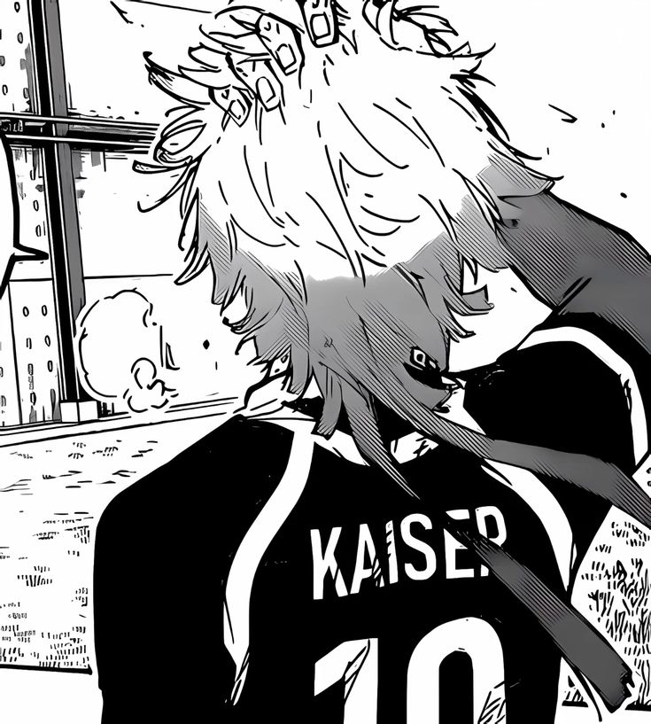

Skills

ไกเซอร์ถือเป็นนักเตะอัจฉริยะในวงการฟุตบอลอาชีพ เขาเล่นฟุตบอลให้กับทีมที่ดีที่สุดทีมหนึ่งของโลกในตำแหน่งกองหน้าตัวหลัก ทักษะการเล่นของเขาเป็นที่นับถือจากเพื่อนร่วมทีม ทีมคู่แข่ง เจ้าของสโมสร นักลงทุน และแม้แต่กองหน้าที่ดีที่สุดในโลก ทักษะและเทคนิคของเขาอยู่ในระดับสูงมากจนทำให้สไตล์การเล่นและปรัชญาของทีมขึ้นอยู่กับตัวเขาและสไตล์การเล่นของเขา